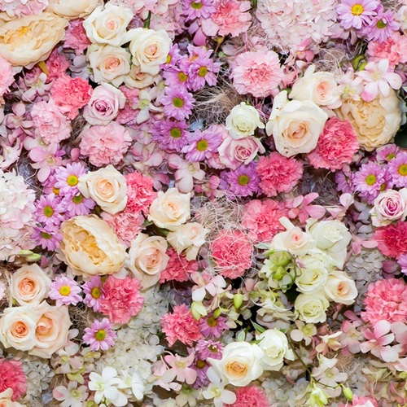

Notes on a Rose
‘A rose by any other name would smell as sweet,’ the love-sick Juliet once ruminated and she was quite right. This sumptuous flower has reigned supreme over the hearts and minds of poets, writers and artists since time immemorial. Wars have been named after it. Royal houses and entire nations have chosen to be symbolised by it. For centuries, it has been used to scent everything from baths and fountains to bedrooms and banquets. It’s really quite simple – everyone adores the rose.There are around 30,000 varieties of rose, yet no two are the same. They climb. They ramble. They always captivate. Archaeologist’s date rose fossils back 35 million years, and yet Greek mythology tells more than one story of how the rose was conjured into being. One such tale is of Chloris, goddess of flowers, happening upon the body of a beautiful nymph in the forest. Calling on her fellow deities, the lifeless nymph was blessed with beauty, nectar, charm and joy, while warmed by the rays of the sun. She was thus transformed into an exquisite flower and named Rose by Aphrodite.
An auspicious new start by anyone’s standards. At Jo Malone London, we’ve always been intrigued by the personalities of roses. The dimensions to their characters, which lend themselves to endless possibility. The English rose, heavy with bees in the late summer sun of a walled garden, is the most fragrant of them all. Rose de mai grows only in Grasse during the month of May and must be picked at dawn to preserve its delicate scent. Damascene rose, believed to have been brought to European shores from Syria by a French crusader, conjures the sensuousness of desert nights in the Middle East. We could go on. Five roses find five perfect partners in our Rose Collection that includes: Red Roses Cologne, Velvet Rose & Oud Cologne, Rose Blush Cologne, Rose & Magnolia Cologne and Rose & White Musk. Each fragrance is a journey in itself. At times peachy, dewy, green. At others, warm, deep, mysterious – but always blended with ingredients that defy expectation. Through loves and losses, triumphs and disasters, the rose remains at the heart of it all.